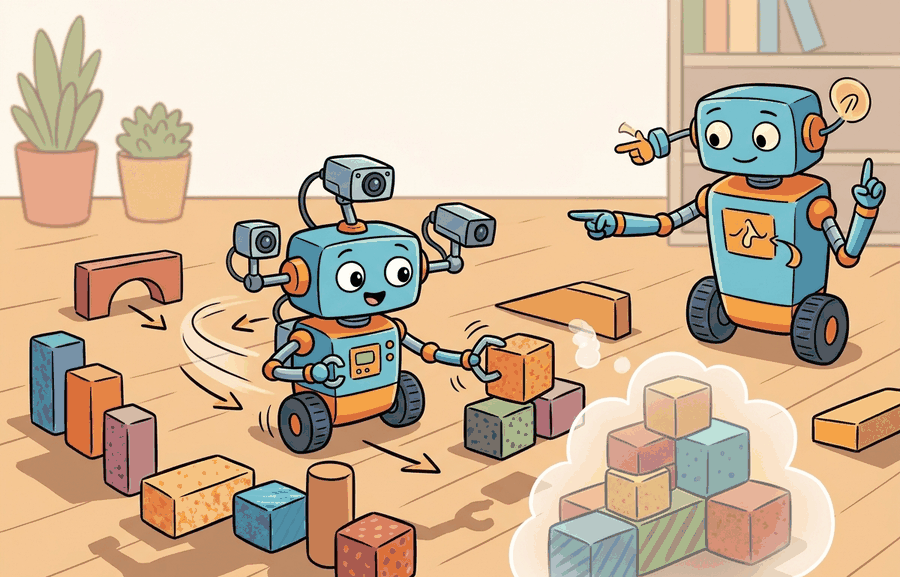

"The wrong space does not crash. It trains quietly for days and hands you a policy that was never solving your problem."
A Silent Type Error

Observation and action spaces defines the contract an embodied experiment exposes to learning code: observations, actions, rewards, termination, truncation, rendering, and diagnostic info. Gymnasium handles the single-agent version of that contract, while PettingZoo extends the same discipline to multi-agent interaction.
This section turns the agent-environment interface into space declarations, dtype, bounds, sampling behavior, and action scaling practice, preparing RL training, multi-agent experiments, and benchmark evaluation with one auditable environment contract.
What This Section Builds
Observation and action spaces are the typed boundary of an embodied task. The space is where the simulator tells the learning code what can be sensed, what can be commanded, and which samples are invalid before the policy ever trains.
The goal is to make every observation and action inspectable. A camera tensor, proprioceptive vector, gripper command, and discrete mode switch should each have shape, dtype, bounds, and units that a teammate can verify.
This environment is ready when another reader can reset it with the same seed, inspect space declarations, dtype, bounds, sampling behavior, and action scaling, reproduce the same rollout, and recover the same logged evidence.
Theory
A Gymnasium space is a mathematical set with enough metadata for code to sample, validate, batch, flatten, or reject values. Box handles continuous tensors, Discrete handles one categorical choice, MultiDiscrete handles several categorical choices, and Dict keeps structured observations readable instead of forcing every signal into one anonymous vector.
The design question is not "what can my simulator emit?" The better question is "what should the policy be allowed to observe and command?" That distinction prevents hidden state leaks, mismatched units, and action dimensions that a robot controller cannot execute.
Spaces do three jobs at once: they document the contract, generate samples for smoke tests, and let wrappers or vector environments transform data safely. If space.contains(value) fails, the bug is at the interface boundary rather than inside the policy optimizer.
Worked Example
Code Fragment 10.2.1 builds a structured observation space for a tabletop robot. The camera, arm joints, and gripper state stay separate, so debugging can identify which signal violated the contract.
# Define a structured observation space for a tabletop robot.
# Dict spaces keep images, joints, and gripper state inspectable.
from gymnasium import spaces
observation_space = spaces.Dict({
"image": spaces.Box(0, 255, shape=(64, 64, 3), dtype="uint8"),
"joint": spaces.Box(-1.0, 1.0, shape=(7,), dtype="float32"),
"gripper": spaces.Discrete(2),
})
sample = observation_space.sample()
print(observation_space.contains(sample))
print(sample["image"].shape, sample["joint"].shape, sample["gripper"])The expected output starts with True, which confirms that the sampled observation satisfies the declared Dict space exactly. The listed shapes then make the contract visible: one RGB image tensor, one seven-joint vector, and one binary gripper state.
spaces.Dict to keep three observation channels explicit. The contains check is a cheap contract test: if a reset or step observation fails it, the environment is returning data that the policy was never promised.Gymnasium spaces replace hand-written shape checks with a standard interface used by wrappers, vector environments, and RL libraries. The shortcut is not fewer lines only; it is a shared contract that other tools already understand.
Practical Recipe
- Choose
Dictfor heterogeneous sensor packets instead of flattening too early. - Choose
Boxfor bounded continuous vectors such as joint positions, velocities, images, or normalized actions. - Choose
DiscreteorMultiDiscretefor mode choices, buttons, symbolic skills, or gripper states. - Check
observation_space.contains(obs)afterresetandstepwhile developing a custom environment. - Document units and scaling near the space declaration, not in a separate notebook.
A usable environment wrapper for this section records space declarations, dtype, bounds, sampling behavior, and action scaling, plus observation and action spaces, reset seed, info dictionary fields, and reproducible evidence artifacts.
The common mistake is to publish a space that matches array shapes but not meaning. A seven-value Box is ambiguous unless the reader knows whether the values are joint angles, normalized commands, velocities, or already filtered state estimates.
Two failure modes appear constantly in practice and produce no error messages. First, many RL libraries silently clamp out-of-bounds continuous actions to the declared Box limits rather than raising an exception, so a policy that consistently saturates the action boundary will appear to train normally while never exploring the full command range. Second, a dtype mismatch between the declared space (float32) and the array a custom environment actually returns (float64) causes space.contains(obs) to return False, which breaks wrappers and vectorized environments in ways that surface only later as cryptic shape errors. Run contains checks on real reset and step outputs during development, not just on sampled values.
For a pick-and-place environment, expose the policy observation as a Dict: image crop, proprioception, gripper bit, and target pose. Keep privileged simulator state in info for diagnostics unless the real robot would also have that state at decision time.
Treat observation and action spaces like a control-room label. If the label does not tell a future debugger what moved, what sensed, or what failed, it is decoration rather than engineering knowledge.
Modern robot learning is stretching observation spaces beyond fixed vectors: language goals, variable numbers of objects, graph observations, and multimodal histories all appear in current systems. The research pressure is to keep those richer observations structured enough for learning code while preserving the simulator-to-robot contract.
For every key in your observation space, can you state its shape, dtype, bounds, unit, and whether the real robot can observe it? If any answer is missing, the space is not yet a contract.
Observation and action spaces are where simulation shortcuts often leak into results. If the observation includes exact object pose from the simulator while the real robot would only have pixels, the task has changed. If the action space accepts arbitrary forces while the real controller accepts joint targets, the policy may solve a fantasy control problem.
The graduate-level habit is to audit spaces as claims about sensing and actuation. A space declaration says what information is available, what commands are legal, and what transformations happen before the learning algorithm sees the data.
| Tool or Library | Role in the Topic | Builder Advice |
|---|---|---|
spaces.Box | Continuous tensors | Use for images, proprioception, velocities, and normalized continuous commands. |
spaces.Discrete | One categorical command | Use for mode choices such as open versus close or move skill selection. |
spaces.MultiDiscrete | Several categorical commands | Use for independent button-like controls or discretized multi-joint actions. |
spaces.Dict | Structured sensor packets | Use when preserving channel names improves debugging and avoids hidden flattening assumptions. |
spaces.Graph or Sequence | Variable structure | Use cautiously for object sets or relational observations, and confirm the trainer supports the space. |
The action space type directly shapes what the optimizer must learn. Consider a robot that can move its base in two axes and open or close its gripper. Encoding all three choices as a single flat Box([-1,-1,0], [1,1,1]) forces a continuous policy to discover on its own that the third dimension should stay near 0 or 1 despite having no natural gradient signal toward those extremes. Using Dict({"base": Box(-1,1,shape=(2,)), "gripper": Discrete(2)}) instead lets each policy head specialize: the continuous head learns smooth base trajectories while the discrete head learns a binary switch. Stable-Baselines3 and CleanRL both support Dict action spaces for this reason. The choice is architectural, not cosmetic.
A robust implementation writes the spaces before writing the dynamics. That order forces the author to decide what the agent may know and do, then makes the simulator produce values that match the declared contract.
- Declare the observation and action spaces in the environment constructor.
- Run
containschecks after every customresetandstepduring development. - Keep simulator-only diagnostic variables in
info, not in the policy observation. - Record space definitions in the experiment artifact, including units and scaling.
- Change the policy architecture only after the environment contract is stable.
# Define action choices separately from continuous observations.
# This makes controller legality visible before training starts.
from gymnasium import spaces
action_space = spaces.MultiDiscrete([3, 3, 2])
action_space.seed(4)
action = action_space.sample()
meaning = {
"x_motion": ["left", "hold", "right"][int(action[0])],
"y_motion": ["back", "hold", "forward"][int(action[1])],
"gripper": ["open", "close"][int(action[2])],
}
print(action.tolist())
print(meaning)
print(action_space.contains(action))The expected output shows the integer action tuple and its physical decoding side by side, then confirms with True that the action is legal under the declared space. This is the interpretation readers should want in a robot log: not only what integers were sampled, but what motion command they meant.
MultiDiscrete action into a robot-control interpretation. The code keeps the legal values and their physical meaning together, which prevents a sampled action from becoming an unnamed integer tuple.When an experiment about observation and action spaces fails, avoid labeling the whole method as weak. First assign the failure to perception, state estimation, planning, control, timing, data coverage, or evaluation. Then rerun one controlled perturbation that isolates the suspected cause. This pattern turns a disappointing rollout into a reusable diagnostic asset.
Spaces are the environment's public type system. If the space is precise, policies, wrappers, vector environments, and diagnostics can agree on what the task means.
Design the observation and action spaces for a mobile manipulator that sees an RGB image, reads six joint angles, and chooses between three base motions plus a binary gripper command. Include shape, dtype, bounds, and one contains smoke test.
The next section should inherit the Observation and action spaces interface contract and change only the next environment-design variable under study.
Farama Foundation. "Gymnasium Documentation."
The official Gymnasium docs define the reset, step, render, terminated, truncated, and info conventions used by maintained environments. Readers implementing custom environments should use this as the API reference. Readers should connect this source to observation and action spaces when deciding what is reusable, what is benchmark-specific, and what must be remeasured.
Farama Foundation. "PettingZoo Documentation."
PettingZoo defines maintained APIs for multi-agent reinforcement learning. It is directly relevant when a section moves from one embodied agent to turn-based, simultaneous, or mixed multi-agent interaction. Readers should connect this source to observation and action spaces when deciding what is reusable, what is benchmark-specific, and what must be remeasured.
This paper explains why multi-agent environments need explicit agent ordering and interface discipline. It gives researchers the context behind the AEC and parallel API choices described in this chapter. Readers should connect this source to observation and action spaces when deciding what is reusable, what is benchmark-specific, and what must be remeasured.
Brockman, G. et al. (2016). "OpenAI Gym." arXiv.
The original Gym paper explains the environment abstraction that Gymnasium modernizes. It is useful for readers comparing legacy examples with the maintained Farama stack. Readers should connect this source to observation and action spaces when deciding what is reusable, what is benchmark-specific, and what must be remeasured.
Stable-Baselines3 Contributors. "Stable-Baselines3 Documentation."
Stable-Baselines3 gives a practical reference for how environment spaces, vectorized environments, wrappers, and evaluation callbacks are consumed by training code. Engineers should read it when turning a custom environment into a reproducible RL experiment. Readers should connect this source to observation and action spaces when deciding what is reusable, what is benchmark-specific, and what must be remeasured.